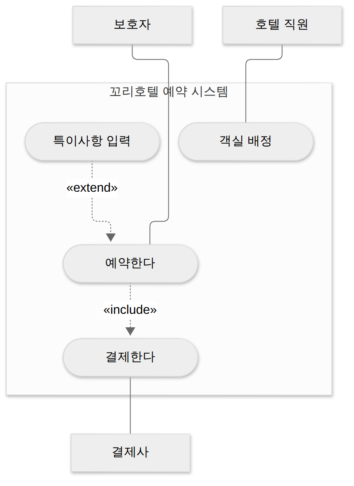
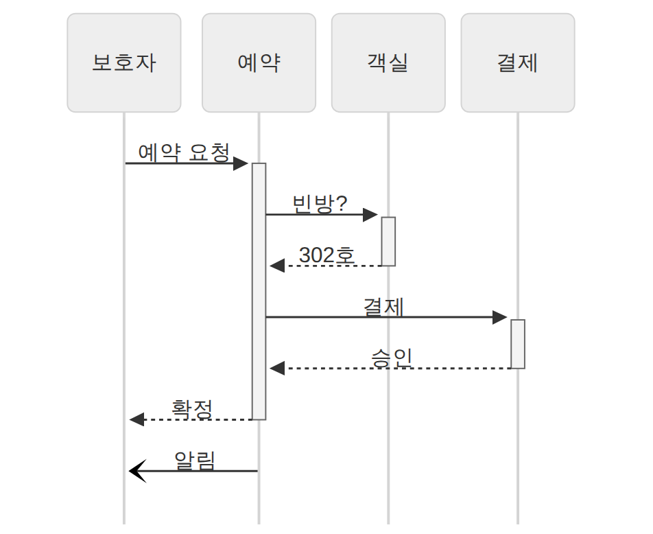
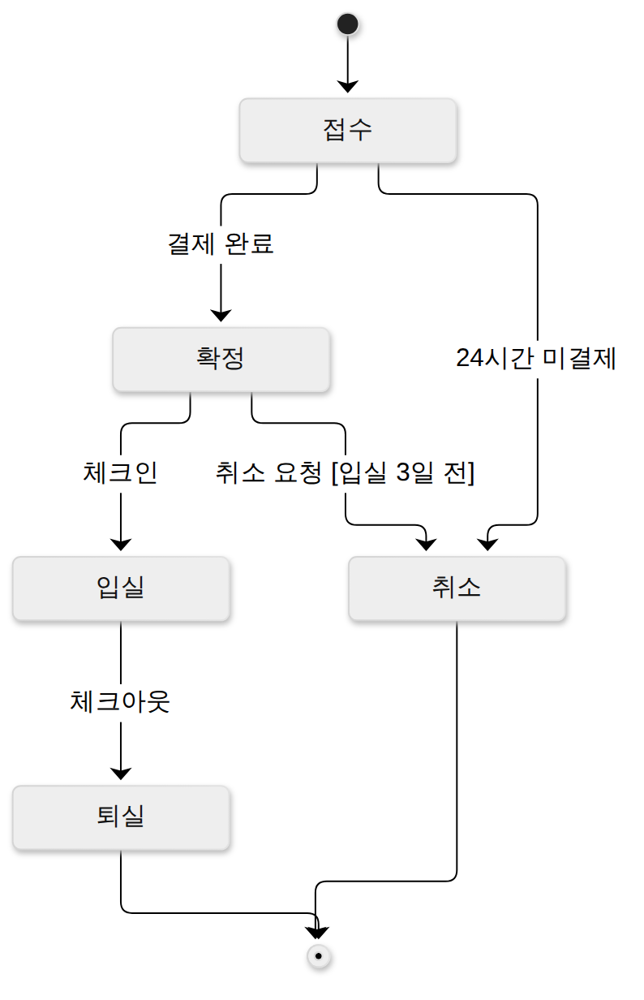

D040 · 1과목 총정리① — 요구사항·UML·애자일·UI·모듈·패턴·미들웨어를 기출 함정으로 한 번 더 꿰기
A 1과목 범위를 다 돌고 나니, 이제는 “배운 개념이 시험지에서 어떤 얼굴로 나오는지”가 남았어요. 오늘과 월요일 이틀에 걸쳐 1과목을 기출 각도로 다시 훑어요. 오늘은 앞쪽 절반(A1 요구사항 · 분석 모델, A2 UI, A3 공통 모듈 · 객체지향 설계, A4 인터페이스 설계)이에요. 예시는 가상의 반려동물 호텔 체인 ‘꼬리호텔’(마포 · 성수 · 판교 지점)의 예약 앱 하나로 처음부터 끝까지 따라가요.
- UML 다이어그램을 구조 / 행위로 나누고, 설명 한 문장만 보고 유스케이스 · 시퀀스 · 상태 · 활동 중 맞는 그림을 고를 수 있다
- XP 5가치와 스크럼 역할 · 이벤트 · 칸반을 구별하고, DFD 구성요소 · 자료 사전 기호를 가를 수 있다
- fan-in / fan-out을 세고, 결합도 6칸 · 응집도 7칸을 “가르는 질문”으로 구별하며, 캡슐화 · 다형성 · 추상화를 구별할 수 있다
- GoF 23개를 생성 · 구조 · 행위로 나누고, 미들웨어 5종 · EAI 4유형 · UI 유형 4가지를 짝지을 수 있다
1부 (약 23분)
2부 (약 25분)
0. 기본 전제와 용어 사전
제목 옆의 기출 N회는 최근 20회 시험 중 그 개념이 한 번 이상 나온 회차 수예요. 18회 이상이면 거의 매 시험 나온다는 뜻이라 앞쪽에서 길게 다루고, 횟수가 적은 개념은 정의와 가르는 질문만 짧게 둬요. 어제(D039) 정리한 UML 관계 6종 · 분류화 / 집단화 / 일반화 · 분석 방법론 5종 · HIPO · 시간적 / 통신적 응집도는 다시 설명하지 않고 “D039에서 본 그것”으로 연결만 해요.
아래 용어는 이 페이지 전체에서 같은 뜻으로 써요. 처음 보는 단어가 본문에서 나오면 여기로 돌아오면 돼요.
| 용어 | 뜻 | 꼬리호텔 예 |
|---|---|---|
| 애자일(Agile) | 짧은 주기로 동작하는 결과물을 내고, 바뀌는 요구에 맞춰 계속 고치는 개발 방식들의 묶음 | 2주마다 예약 앱 새 기능 공개 |
| 액터(Actor) | 시스템 바깥에서 시스템과 주고받는 사람이나 외부 시스템 | 보호자 · 호텔 직원 · 결제사 |
| 생명선 · 메시지 | 시퀀스 다이어그램에서 객체의 시간 축(세로 점선) / 객체끼리 보내는 호출(가로 화살표) | 예약 → 객실 “빈방?” |
| 상태 · 전이 · 이벤트 | 객체가 머무는 상황 / 상황이 바뀌는 것 / 바뀌게 만든 사건 | 접수 → 확정(결제 완료) |
| 모듈 | 이름을 붙여 따로 만들고 호출할 수 있는 프로그램 조각 | 결제 모듈 · 알림 모듈 |
| fan-in / fan-out | 나를 호출하는 상위 모듈 수 / 내가 호출하는 하위 모듈 수 | 결제: fan-in 2 · fan-out 1 |
| 디자인 패턴 | 자주 되풀이되는 설계 문제에 이름을 붙인 검증된 해법 | 알림 = Observer |
| 미들웨어 | 서로 다른 시스템 사이에서 통신 · 트랜잭션 · 메시지 전달을 대신 맡는 소프트웨어 | 지점 단말 ↔ 본사 DB |
| EAI | 기업 안의 여러 애플리케이션을 연결해 데이터와 업무 흐름을 통합하는 방식 | 세 지점 예약 시스템 통합 |
1. 큰 그림 — 1과목 절반을 시험지 눈으로
지난 모의고사(M01 · M02)와 D030 종합에서 1과목은 “개념은 아는데 선지에서 헷갈렸다”는 오답이 많았어요. XP 가치에 스크럼 가치를 섞은 선지, 구조 패턴 목록에 행위 패턴 하나를 숨긴 선지, Hub & Spoke와 Message Bus 설명을 바꿔 놓은 선지가 대표적이에요. 그래서 오늘은 개념을 처음부터 다시 외우기보다, 이미 아는 개념을 선지를 가르는 질문으로 바꿔 두는 데 집중해요.
순서는 꼬리호텔 예약 앱이 만들어지는 순서 그대로예요. 팀이 일하는 방식을 정하고(장면 1), 무엇을 만들지 그림으로 정리하고(장면 2), 화면을 설계하고(장면 3), 코드를 모듈로 쪼개 품질을 따지고(장면 4), 반복되는 설계 문제에 패턴을 적용하고(장면 5), 마지막으로 세 지점 시스템을 하나로 잇는(장면 6) 흐름이에요.
한 장 요약 — 18회 이상 나온 묶음과 오늘 가져갈 한 줄이에요. 아래 장면에서 하나씩 문단으로 풀어요.
| 묶음 (기출 회차) | 가져갈 한 줄 | 장면 |
|---|---|---|
| 애자일 · XP · 스크럼 · 칸반 (20) | XP 가치에 “정형 분석 · 문서 중심”은 없다 | 1 |
| CASE (18) | 상위 = 분석 · 설계, 하위 = 구현 · 테스트 | 1 |
| UML 다이어그램 (20) | 구조 7 / 행위 7, 시퀀스는 동적 | 2 |
| DFD · 자료 사전 (18) | DFD 기호는 넷, 자료 사전은 그 밖의 문서 | 2 |
| UI 유형 · 원칙 (18) | NUI = 몸짓, 직관성 = 누구나 쉽게 | 3 |
| 모듈화 · fan-in/out (20) | 들어오는 화살표 = fan-in | 4 |
| 결합도 (19) · 응집도 (16) | 결합도는 약하게, 응집도는 강하게 | 4 |
| GoF (19) | Builder는 생성, Strategy · State는 행위 | 5 |
| 미들웨어 (18) · EAI (14) | MOM은 비동기, EAI에 Tree형은 없다 | 6 |
2. 장면 1 — 팀이 일하는 방식 (XP · 스크럼 · 칸반 · CASE) 기출 20회
앱을 만들기 전에 꼬리호텔 개발팀이 먼저 정해야 하는 건 “어떻게 일할까”예요. 요구가 자주 바뀌는 서비스라 1년짜리 계획서를 먼저 쓰는 방식은 맞지 않다는 결론이 나왔고, 그래서 애자일 계열 방법을 고르게 됐어요. 이 장면에서 시험에 나오는 이름이 전부 등장해요.
애자일 선언과 XP
정의: 애자일(Agile)은 고객과 협력하며 짧은 주기로 동작하는 소프트웨어를 내놓고, 변화를 계획보다 우선해 받아들이는 개발 방식들의 공통 생각이에요. 왜 생겼냐면, 폭포수처럼 문서와 단계 승인을 앞세우는 방식은 요구가 바뀌면 처음 단계로 되돌아가기 어려웠기 때문이에요. 2001년 개발자 17명이 이 생각을 “애자일 선언”으로 정리했어요. XP · 스크럼 · 칸반 · 린(Lean) · 크리스털 · FDD 같은 방법이 모두 이 우산 아래에 있어요.
애자일 선언은 네 쌍의 비교로 되어 있어요. 오른쪽에도 가치가 있지만 왼쪽을 더 중시한다는 문장이에요. 프로세스와 도구보다 개인과 상호작용을, 포괄적인 문서보다 동작하는 소프트웨어를, 계약 협상보다 고객과의 협력을, 계획을 따르기보다 변화에 대응하기를 더 중시해요. 출제자는 이 좌우를 살짝 뒤집어 “문서가 소프트웨어보다 중요하다”라고 써 놓고 졸린 수험생을 기다려요.
XP(eXtreme Programming)는 Kent Beck이 1990년대 후반 정립한 애자일 방법으로, “좋다고 알려진 개발 실천을 극단까지 자주 하자”는 생각이에요. 코드 리뷰가 좋으면 아예 둘이 함께 짜고(짝 프로그래밍), 테스트가 좋으면 코드보다 테스트를 먼저 쓰고(테스트 주도 개발), 통합이 좋으면 하루에도 여러 번 통합해요(지속적 통합). 고객도 팀 곁에 두고 짧은 릴리스마다 피드백을 받아요.
XP의 5가치는 의사소통 · 단순성 · 피드백 · 용기 · 존중이에요. 의사소통은 개발자 · 고객이 계속 대화해 오해를 줄이는 것, 단순성은 지금 필요한 만큼만 가장 단순하게 만드는 것, 피드백은 테스트 · 고객 반응을 빨리 받아 방향을 고치는 것, 용기는 필요하면 설계를 갈아엎고 문제를 솔직히 말하는 것, 존중은 팀원 서로의 기여를 인정하는 것이에요. 짝 프로그래밍은 운전자와 내비게이터 같아요. 한 명이 키보드를 잡고, 옆 사람이 “거기 아니고 다음 골목이요”를 바로 말해 줘요.
가치를 지키는 실천(프랙티스)은 따로 외워요. 짝 프로그래밍, 테스트 주도 개발, 지속적 통합, 리팩토링(동작은 그대로 두고 구조를 개선), 작은 릴리스, 공동 코드 소유, 사용자 스토리(고객이 쓰는 짧은 요구 카드), 지속 가능한 속도(주 40시간) 등이 있어요. 가치는 “무엇을 중요하게 여기나”, 실천은 “그래서 매일 무엇을 하나”예요.
스크럼과 칸반
정의: 스크럼(Scrum)은 복잡한 제품을 짧고 기간이 고정된 반복(스프린트, 보통 1~4주)으로 나눠 만들고, 매 반복마다 검사하고 적응하는 팀 운영 틀이에요. XP가 “코드를 어떻게 짜나”에 가깝다면 스크럼은 “팀이 어떤 리듬으로 모이고 결정하나”를 정해요. 그래서 실제 팀은 스크럼으로 일정을 돌리고 그 안에서 XP 실천을 쓰는 경우가 많아요.
스크럼의 역할은 셋이에요. 제품 책임자(PO)는 제품 백로그(할 일 목록)의 우선순위를 정하는 사람, 스크럼 마스터는 팀이 스크럼을 잘 따르도록 돕고 방해물을 치우는 사람(관리자가 아니라 코치), 개발자는 실제로 증분을 만드는 사람들이에요. 산출물도 셋이에요. 제품 백로그, 이번 스프린트에 할 일인 스프린트 백로그, 스프린트 끝에 나오는 동작하는 제품 조각인 증분(Increment)이에요.
이벤트는 스프린트 안에 넷이에요. 스프린트 계획(이번에 무엇을 할지), 일일 스크럼(매일 같은 시간 15분, 다음 24시간 계획 맞추기), 스프린트 리뷰(만든 증분을 이해관계자에게 시연), 스프린트 회고(일하는 방식 개선)예요. 일일 스크럼은 보통 서서 해요. 앉는 순간 회의가 길어지고, 일어서 있으면 15분이 금방 지나가거든요.
아래 애니메이션으로 한 스프린트 동안 이벤트가 어떤 순서로 바뀌는지 따라가 보세요. 먼저 “15분짜리는 몇 번째 칸일까?”를 예상해 보고 넘기면 돼요.
시작 전 제품 책임자가 제품 백로그를 우선순위로 줄 세워 둬요.
| 순서 | 이벤트 | 결과물 |
|---|---|---|
| 1 | 스프린트 계획 | 스프린트 백로그 |
| 2 | 일일 스크럼 (1일차) | 오늘 계획 |
| 3 | 일일 스크럼 (n일차) | 오늘 계획 |
| 4 | 스프린트 리뷰 | 증분 시연 · 피드백 |
| 5 | 스프린트 회고 | 개선 약속 |
제품 백로그에는 “객실 사진 올리기”, “특이사항 입력”, “지점별 요금” 같은 할 일이 중요한 순서로 쌓여 있어요. 이 목록의 주인이 PO예요.
| 순서 | 이벤트 | 결과물 |
|---|---|---|
| 1 | 스프린트 계획 | 스프린트 백로그 |
| 2 | 일일 스크럼 (1일차) | 오늘 계획 |
| 3 | 일일 스크럼 (n일차) | 오늘 계획 |
| 4 | 스프린트 리뷰 | 증분 시연 · 피드백 |
| 5 | 스프린트 회고 | 개선 약속 |
스프린트 계획: 팀 전체가 모여 이번 2주 동안 할 일을 제품 백로그 위쪽에서 골라 스프린트 백로그로 옮겨요. 개발자가 “이만큼 할 수 있다”를 정해요.
| 순서 | 이벤트 | 결과물 |
|---|---|---|
| 1 | 스프린트 계획 | 스프린트 백로그 |
| 2 | 일일 스크럼 (1일차) | 오늘 계획 |
| 3 | 일일 스크럼 (n일차) | 오늘 계획 |
| 4 | 스프린트 리뷰 | 증분 시연 · 피드백 |
| 5 | 스프린트 회고 | 개선 약속 |
일일 스크럼 1일차: 매일 같은 시간, 15분 안에 서서 “목표까지 어디쯤인가, 막힌 건 없나”를 맞추고 다음 24시간 계획을 세워요. 문제 해결 토론은 회의 뒤로 미뤄요.
| 순서 | 이벤트 | 결과물 |
|---|---|---|
| 1 | 스프린트 계획 | 스프린트 백로그 |
| 2 | 일일 스크럼 (1일차) | 오늘 계획 |
| 3 | 일일 스크럼 (n일차) | 오늘 계획 |
| 4 | 스프린트 리뷰 | 증분 시연 · 피드백 |
| 5 | 스프린트 회고 | 개선 약속 |
일일 스크럼은 스프린트 기간 매일 반복돼요. 2주 스프린트면 대략 열 번. 15분짜리 이벤트는 이것 하나뿐이에요.
| 순서 | 이벤트 | 결과물 |
|---|---|---|
| 1 | 스프린트 계획 | 스프린트 백로그 |
| 2 | 일일 스크럼 (1일차) | 오늘 계획 |
| 3 | 일일 스크럼 (n일차) | 오늘 계획 |
| 4 | 스프린트 리뷰 | 증분 시연 · 피드백 |
| 5 | 스프린트 회고 | 개선 약속 |
스프린트 리뷰: 이번에 만든 증분(동작하는 조각)을 보호자 대표 · 호텔 운영자 앞에서 실제로 보여 주고 피드백을 받아 제품 백로그를 고쳐요. 결과물에 대한 회의예요.
| 순서 | 이벤트 | 결과물 |
|---|---|---|
| 1 | 스프린트 계획 | 스프린트 백로그 |
| 2 | 일일 스크럼 (1일차) | 오늘 계획 |
| 3 | 일일 스크럼 (n일차) | 오늘 계획 |
| 4 | 스프린트 리뷰 | 증분 시연 · 피드백 |
| 5 | 스프린트 회고 | 개선 약속 |
스프린트 회고: 팀끼리 “일하는 방식”을 돌아봐요. 무엇이 잘됐고 무엇을 바꿀지. 리뷰가 제품을, 회고가 팀의 과정을 본다는 점이 둘을 가르는 질문이에요. 끝나면 다음 스프린트 계획으로 돌아가요.
정의: 칸반(Kanban)은 일을 카드로 만들어 보드의 세로 칸(접수 · 진행 · 확인 · 완료)으로 흘려 보내면서, 칸마다 동시에 진행할 수 있는 일의 수(WIP 제한, Work In Progress)를 두는 흐름 관리 방식이에요. 원래 도요타 생산 방식에서 왔고, 스크럼과 달리 고정된 스프린트나 정해진 역할이 없어요. 진동벨이 세 개뿐인 푸드코트처럼, 진행 칸이 차면 새 일을 시작하지 않고 막힌 일부터 끝내게 만들어요.
한 장 요약 — 세 방식을 가르는 질문이에요.
| 가르는 질문 | 답 | 왜 |
|---|---|---|
| 가치 다섯에 “용기 · 단순성 · 피드백”이 있나? | XP | 스크럼 가치는 확약 · 집중 · 공개 · 존중 · 용기 |
| 짝 프로그래밍 · 테스트 먼저 · 지속적 통합? | XP | 개발 실천 중심 |
| PO · 스크럼 마스터 · 매일 15분 회의? | 스크럼 | 팀 운영 틀 |
| 기간 고정 스프린트 없이 WIP 제한? | 칸반 | 흐름 관리 |
CASE — 개발을 돕는 도구 기출 18회
정의: CASE(Computer-Aided Software Engineering)는 요구 분석 · 설계 · 구현 · 테스트 · 유지보수 같은 개발 과정의 일을 컴퓨터 도구로 자동화하고 지원하는 것이에요. 왜 생겼냐면, 손으로 DFD를 그리고 문서를 맞추고 코드와 설계를 따로 고치다 보면 산출물끼리 어긋나기 쉬웠기 때문이에요. 도구가 그림 · 문서 · 코드를 한 저장소(정보 저장소, repository)에서 함께 관리하면 일관성이 유지돼요.
CASE는 지원하는 단계에 따라 나눠요. 상위(Upper) CASE는 요구 분석 · 설계 단계를 돕는 도구로, DFD · ER 다이어그램 · 자료 사전 작성과 명세 검증을 지원해요. 하위(Lower) CASE는 구현 이후를 돕는 도구로, 코드 생성 · 디버깅 · 테스트 · 문서화를 지원해요. 둘을 아우르는 것이 통합 CASE예요. 꼬리호텔 팀이 분석 단계에서 DFD를 그리는 도구는 상위, 설계에서 코드 뼈대를 뽑아 주는 도구는 하위 CASE예요.
CASE가 가능해진 바탕 기술(원천 기술)로는 구조적 기법, 프로토타이핑, 자동 프로그래밍, 정보 저장소, 분산 처리가 꼽혀요. 주요 기능은 생명주기 단계 연결, 다양한 개발 모형 지원, 그래픽 지원, 문서 자동화예요. 그래서 “언어 번역”(컴파일러의 일)이나 “일괄 처리”는 CASE의 기능 · 원천 기술이 아니라는 선지가 나와요. SADT는 SoftTech 사가 만든 구조적 요구 분석 도구로 CASE의 한 예로 나오고, HIPO는 D039에서 본 하향식 문서화 도구예요.
→ 이 장면의 결과물: 2주 스프린트로 돌리고(스크럼), 그 안에서 짝 프로그래밍 · 테스트 주도로 짜고(XP), 분석 그림은 상위 CASE로 관리하기로 했어요. 그래서 다음 장면은 “무엇을 만들지”를 요구사항과 그림으로 정리하는 일이에요.
3. 장면 2 — 무엇을 만들까 (요구사항 · UML · DFD · 자료 사전) 기출 20회
일하는 방식이 정해졌으니 이제 만들 것을 정할 차례예요. 보호자 인터뷰에서 나온 말을 요구사항으로 다듬고, 그 요구가 맞는지 검토하고, 개발자가 함께 볼 수 있도록 그림(모델)으로 옮겨요. 오늘 장면 중 가장 무겁고, 시험 문항도 가장 많이 걸린 장면이에요.
요구사항 개발 프로세스 · 검증 · 추적성 기출 14회
정의: 요구사항 개발 프로세스는 이해관계자가 원하는 것을 찾아내 개발자가 쓸 수 있는 문서로 만들고, 그 문서가 맞는지 확인하는 네 단계 과정이에요. 단계마다 하는 일이 달라서 순서를 묻는 문제가 나와요.
요구사항 검증은 명세된 요구가 고객이 정말 원하는 시스템을 정의하고 있는지 확인하는 일이에요. 왜 따로 하냐면, 요구사항의 오류는 개발이 끝난 뒤에 발견되면 설계 · 코드 · 테스트를 다 고쳐야 해서 재작업 비용이 아주 크기 때문이에요. 검증할 때는 타당성(정말 필요한가), 일관성(서로 모순 없나), 완전성(빠진 것 없나), 현실성(만들 수 있나), 검증 가능성(테스트로 확인할 수 있나)을 봐요. “예약은 빠르게 돼야 한다”는 검증 가능성이 없고, “예약 확정까지 3초 이내”는 있어요.
검증 방법으로 시험에 나오는 건 검토(리뷰) 세 가지예요. 동료 검토는 작성자가 명세를 설명하고 동료들이 들으며 결함을 찾는 가장 가벼운 방식이에요. 워크스루는 검토 회의 전에 명세서를 미리 나눠 주고, 짧은 회의에서 작성자가 내용을 따라가며(walk through) 오류를 일찍 찾는 비공식 검토예요. 인스펙션은 작성자가 아닌 훈련된 검토자들이 체크리스트 같은 기준으로 결함을 찾는 가장 공식적인 검토로, 계획 → 사전 교육 → 준비 → 인스펙션 회의 → 수정 → 후속 조치 순서를 밟아요.
요구사항 추적성은 요구사항과 설계 · 코드 · 테스트 같은 다른 산출물 사이에 연결 관계를 세울 수 있는 정도예요. 꼬리호텔의 요구 REQ-12 “알레르기 정보 입력”이 어느 설계 모듈(특이사항 입력)과 어느 테스트 케이스(TC-31)로 이어지는지 표(추적 매트릭스)로 남겨 두면, 요구가 바뀔 때 고칠 곳을 바로 찾고 “구현됐는데 요구에 없는 기능”이나 “요구에 있는데 테스트가 없는 기능”도 찾아낼 수 있어요. 요구사항 관리 도구가 필요한 이유도 이 변경 추적 · 영향 분석이에요.
요구사항은 성격에 따라 둘로 나뉘어요. 기능 요구는 시스템이 “무엇을 해야 하는가”(예약을 받는다, 알림을 보낸다)이고, 비기능 요구는 그 기능이 “얼마나 잘 해야 하는가”(성능 · 보안 · 사용성 · 신뢰성 같은 품질과 제약)예요. “모든 화면이 3초 이내에 보여야 한다”는 비기능 요구의 전형적인 예이고, 기능 요구 설명에 성능 · 보안 같은 비기능 항목을 섞어 놓은 선지는 틀려요. 요구를 적는 방식에는 정형 명세 기법(수학적 기호로 엄밀하게 적음, 모호함이 적지만 배우기 어려움, Z 같은 언어)과 비정형 명세 기법(자연어로 적음, 쉽지만 모호함, 사용자와 소통하기 쉬움)이 있어요. 비정형 기법이 Z를 사용한다는 설명은 뒤집은 것이에요.
요구 분석이 어려운 이유는 사용자의 요구가 예외가 많고 자주 바뀌며 서로 충돌해서 열거하고 구조화하기 어렵기 때문이에요. 그래서 분석 결과는 글만으로 두지 않고 모델(그림)로 그려요. 모델링은 복잡한 현실을 추상화해 이해관계자끼리 의사소통하게 하고, 한 모델링의 결과물이 다음 모델링의 입력이 되며, 개발 초기뿐 아니라 개발 전 과정에서 써요. “모델링은 유지보수 단계에서만 쓴다”거나 “모델링 결과는 다른 작업에 영향을 줄 수 없다”는 틀린 설명이에요. 요구 분석 단계가 “운영 중 발견된 오류를 정리하는 단계”라는 설명도 틀려요(그건 유지보수예요).
UML 지도 — 구조와 행위 기출 20회
정의: UML(Unified Modeling Language)은 객체지향 시스템을 그림으로 표현하는 표준 모델링 언어예요. 1990년대 초에는 방법론마다 기호가 달라 같은 설계를 팀마다 다르게 그렸는데, Booch · Rumbaugh · Jacobson의 방법을 통합해 1997년 OMG가 표준으로 채택했어요. UML의 기본 구성요소는 사물(Things), 사물 사이의 관계(Relationships), 이 둘을 모아 보여 주는 다이어그램(Diagram) 세 가지예요.
UML 2의 다이어그램 14종은 크게 둘로 나눠요. 구조 다이어그램은 시스템에 무엇이 있고 어떻게 연결돼 있는지(정적 측면), 행위 다이어그램은 시간에 따라 무엇이 어떻게 움직이는지(동적 측면)를 그려요. 지하철로 치면 구조는 노선도(역과 선로의 배치), 행위는 운행 시간표(언제 무엇이 오가나)예요. 노선도를 보고 “열차가 몇 시에 오나”를 알 수 없듯, 클래스 다이어그램으로 메시지 순서를 보여 줄 수는 없어요.
구조 쪽 일곱은 이래요. 클래스(클래스 · 속성 · 연산과 관계), 객체(특정 시점의 인스턴스와 연결), 컴포넌트(구현 모듈과 인터페이스), 배치(하드웨어 노드에 어떤 산출물이 놓이는지), 패키지(요소들을 묶은 그룹), 복합체 구조(클래스 내부의 구조), 프로파일(스테레오타입으로 UML을 확장)이에요. 행위 쪽은 유스케이스 · 활동 · 상태에 더해, 객체 간 상호작용을 그리는 시퀀스 · 통신(연결 구조 중심으로 메시지 표현) · 타이밍(시간 제약에 따른 상태 변화) · 상호작용 개요(상호작용들의 흐름)가 있어요. 오늘은 행위 쪽에서 가장 많이 나오는 네 장(주황)을 자세히 봐요.
UML 요소에 의미를 덧붙일 때는 스테레오타입을 써요. 겹꺾쇠(« »)로 감싼 이름이고, «include» · «extend» · «interface»처럼 써요. 시험에서 “UML 확장 요소인 스테레오타입의 기호”를 물으면 겹꺾쇠가 답이에요. 클래스 사이의 선 모양(연관 · 집합 · 합성 · 일반화 · 의존 · 실체화)은 D039에서 정리했으니, 오늘은 “점선 = 의존 · 실체화, 마름모 = 전체–부분”만 떠올리면 돼요.
유스케이스 다이어그램 기출 11회
정의: 유스케이스 다이어그램은 사용자(액터) 입장에서 시스템이 제공하는 기능(유스케이스)과 그 범위를 보여 주는 그림이에요. 요구 분석 초기에 고객과 “이 시스템이 무엇을 해 주나”를 합의하는 용도라, 내부 처리 순서는 그리지 않아요. 구성은 액터(막대 인형), 유스케이스(타원), 시스템 경계(큰 네모), 그리고 관계예요.
액터는 시스템과 직접 주고받는 사람만이 아니에요. 결제사처럼 시스템 밖에서 연동하는 외부 시스템도 액터예요(주 액터는 기능을 요청하는 쪽, 부 액터는 기능 수행을 돕는 쪽). 관계는 넷이에요. 연관(액터와 유스케이스를 잇는 선), 일반화(“카드 결제”가 “결제”의 한 종류), 그리고 헷갈리는 포함과 확장이에요.
포함(include)은 기본 유스케이스를 실행하면 반드시 함께 실행되는 기능이에요. “예약한다”를 하면 “결제한다”가 꼭 따라와서, 화살표는 기본(예약) → 포함(결제)을 향해요. 확장(extend)은 특정 조건에서만 덧붙는 기능이에요. 알레르기가 있는 반려동물일 때만 “특이사항 입력”을 하므로, 화살표는 확장(특이사항) → 기본(예약)을 향해요. 포함은 “항상 데려가는 짝꿍”, 확장은 “조건 맞을 때만 끼는 손님”이에요.

시퀀스 다이어그램 기출 17회
정의: 시퀀스 다이어그램은 객체들이 주고받는 메시지를 시간 순서대로 보여 주는 상호작용 다이어그램이에요. 유스케이스 하나(예: 예약한다)가 내부에서 어떤 객체 협력으로 실행되는지 설계할 때 그려요. 단체 채팅방 대화 기록을 떠올리면 쉬워요. 참가자마다 세로 칸이 있고, 말풍선이 위에서 아래로 쌓이고, “넵”이라는 답장은 점선으로 돌아와요.
구성요소는 다섯이에요. 액터 · 객체(맨 위 상자), 생명선(객체에서 아래로 내려가는 점선, 그 객체가 존재하는 시간), 메시지(객체 사이 가로 화살표), 활성화 상자(생명선 위 가는 막대, 객체가 일을 처리하는 구간), 반환 메시지(점선 화살표)예요. 메시지는 답을 기다리는 동기 메시지(채운 화살표 머리)와 기다리지 않는 비동기 메시지(열린 화살표 머리)로 나눠요. 필요하면 객체 소멸(생명선 끝의 ✕)과 반복 · 조건 묶음(프레임)도 그려요.

상태 다이어그램
정의: 상태 다이어그램은 한 객체가 생애 동안 거치는 상태와, 어떤 사건(이벤트) 때문에 다른 상태로 바뀌는지(전이)를 그린 그림이에요. 예약 · 주문 · 결제처럼 “지금 어떤 단계인가”가 중요한 객체에 그려요. 시퀀스가 여러 객체의 대화라면, 상태 다이어그램은 한 객체의 일대기예요.
구성은 상태(둥근 상자), 전이(화살표), 이벤트(전이를 일으키는 사건, 화살표 위 글), 가드(전이가 일어날 조건, 대괄호), 시작점(검은 점)과 종료점(겹 동그라미)이에요. 꼬리호텔 예약은 접수 → 확정(결제 완료) → 입실(체크인) → 퇴실(체크아웃)로 가고, 접수에서 24시간 동안 결제가 없거나 입실 3일 전까지 취소 요청이 오면 취소로 가요. D037에서 본 럼바우 OMT의 동적 모델링이 바로 이 상태 다이어그램을 써요.

활동 다이어그램
정의: 활동 다이어그램은 일(업무 · 처리)이 어떤 순서로 흘러가는지, 어디서 갈라지고 합쳐지는지를 그린 그림이에요. 순서도를 객체지향 쪽으로 넓힌 모양이라, 업무 흐름이나 복잡한 알고리즘을 그릴 때 써요. 누가 무엇을 하는지는 세로 칸(스윔레인)으로 나눠 보여 줘요.
구성은 액션(둥근 네모, 한 단계의 일), 시작 노드(검은 점)와 종료 노드(겹 동그라미), 조건 분기와 병합(마름모), 포크(fork)와 조인(join)(굵은 막대, 한 흐름이 여러 병행 흐름으로 갈라졌다가 다시 합쳐짐), 스윔레인(구역)이에요. 꼬리호텔에서는 예약 신청 뒤 보호자는 결제하고 직원은 동시에 객실 청소를 지시해요. 두 일이 모두 끝나야(조인) 입실 안내가 나가요.
네 장을 나란히 놓으면 헷갈리기 쉬워요. 아래 애니메이션은 설명 문장 하나에서 단서 단어를 찾아 후보를 지워 나가는 과정이에요. “이 문장은 어느 그림일까?”를 먼저 정하고 넘겨 보세요.
문장 “보호자가 예약 버튼을 누르면 예약 서비스가 객실 관리에 빈방을 묻고, 답을 받은 뒤 결제를 요청한다.”
| 후보 | 가르는 질문 |
|---|---|
| 시퀀스 | 시간 순서대로 메시지를 주고받나? |
| 상태 | 한 객체의 상태와 전이 · 이벤트인가? |
| 활동 | 처리 흐름 · 분기 · 병행(포크/조인)인가? |
| 유스케이스 | 액터와 시스템 경계 · 기능 목록인가? |
후보 넷이 모두 행위 다이어그램이에요. 문장 속 단서 단어를 찾아 하나씩 지워요.
단서: “누르면 → 묻고 → 답을 받은 뒤 → 요청”
| 후보 | 가르는 질문 |
|---|---|
| 시퀀스 | 시간 순서대로 메시지를 주고받나? |
| 상태 | 한 객체의 상태와 전이 · 이벤트인가? |
| 활동 | 처리 흐름 · 분기 · 병행(포크/조인)인가? |
| 유스케이스 | 액터와 시스템 경계 · 기능 목록인가? |
액터와 기능 목록만 보여 주는 그림이 아니에요. “누가 무엇을 할 수 있나”가 아니라 “어떤 순서로 주고받나”라서 유스케이스가 빠져요.
단서: 객체가 여럿(보호자 · 예약 · 객실 · 결제)
| 후보 | 가르는 질문 |
|---|---|
| 시퀀스 | 시간 순서대로 메시지를 주고받나? |
| 상태 | 한 객체의 상태와 전이 · 이벤트인가? |
| 활동 | 처리 흐름 · 분기 · 병행(포크/조인)인가? |
| 유스케이스 | 액터와 시스템 경계 · 기능 목록인가? |
상태 다이어그램은 한 객체가 겪는 상태 변화를 그려요. 여러 객체가 등장하니 상태가 빠져요.
단서: 분기 · 병행이 아니라 메시지 왕복
| 후보 | 가르는 질문 |
|---|---|
| 시퀀스 | 시간 순서대로 메시지를 주고받나? |
| 상태 | 한 객체의 상태와 전이 · 이벤트인가? |
| 활동 | 처리 흐름 · 분기 · 병행(포크/조인)인가? |
| 유스케이스 | 액터와 시스템 경계 · 기능 목록인가? |
활동 다이어그램은 일의 흐름과 분기를 그리고, 누가 누구에게 말하는지는 중심이 아니에요. “묻고 · 답을 받고”는 메시지라서 시퀀스 다이어그램이에요.
새 문장 “예약은 접수에서 결제가 끝나면 확정으로, 체크인하면 입실로 바뀐다.”
| 후보 | 가르는 질문 |
|---|---|
| 시퀀스 | 시간 순서대로 메시지를 주고받나? |
| 상태 | 한 객체의 상태와 전이 · 이벤트인가? |
| 활동 | 처리 흐름 · 분기 · 병행(포크/조인)인가? |
| 유스케이스 | 액터와 시스템 경계 · 기능 목록인가? |
한 객체(예약)가 사건(결제 완료 · 체크인) 때문에 상황을 옮겨 가요. 상태 · 전이 · 이벤트, 그래서 상태 다이어그램이에요.
자료 흐름도(DFD) 기출 18회
정의: 자료 흐름도(DFD, Data Flow Diagram)는 시스템 안에서 자료가 어디서 들어와 어떤 처리를 거쳐 어디에 저장되고 나가는지를 그린 구조적 분석 도구예요. 1970년대 DeMarco 등이 정리한 구조적 분석의 중심 그림이고, 객체지향 이전 방식이지만 지금도 시험에 꾸준히 나와요. 택배 흐름도와 같아요. 상자가 어디서 출발해 어느 허브를 거쳐 어느 창고로 가는지는 보여 주지만, 몇 시에 출발하는지(제어 · 시간)는 보여 주지 않아요.
구성요소는 넷이에요. 프로세스(원, 자료를 변환하는 처리), 자료 흐름(화살표, 이름 붙은 자료의 이동), 자료 저장소(평행선 두 줄, 머무는 자료), 단말(네모, 시스템 밖에서 자료를 보내거나 받는 사람 · 조직)이에요. DFD는 제어 흐름 · 분기 · 반복을 표현하지 않고, 큰 그림(레벨 0, 배경도)에서 시작해 프로세스를 점점 잘게 쪼개(레벨 1, 2 …) 그려요. 이걸 단계적 분해(레벨링)라고 해요.
자료 사전과 소단위 명세서
정의: 자료 사전(DD, Data Dictionary)은 DFD에 나오는 자료 흐름 · 저장소의 이름이 정확히 무엇으로 이루어지는지 정의해 둔 문서예요. DFD 그림 위에 “예약 신청”이라고만 쓰면 사람마다 다르게 이해하니, 그 안에 어떤 항목이 몇 번 들어가는지를 기호로 적어 둬요. 그래서 자료 사전은 DFD를 “설명하는” 짝 문서이지 DFD의 구성요소가 아니에요.
기호는 여섯이에요. = 는 정의(로 이루어진다), + 는 연결(그리고), [ | ] 는 여러 개 중 하나를 고르는 선택, { } 는 반복, ( ) 는 생략 가능, * * 는 주석이에요. 아래 애니메이션에서 꼬리호텔 예약정보 정의를 기호별로 켜며 레코드 세 개가 맞는지 판정해 보세요. 먼저 “메모가 비어도 맞는 레코드일까?”를 예상해 보세요.
예약정보 = 예약번호 + 보호자명 + [소형|중형|대형] + {추가서비스} + (메모)
| 기호 | 읽는 법 | 레코드에 적용 |
|---|---|---|
| = | 정의(로 구성된다) | 예약정보는 아래 항목들로 이루어짐 |
| + | 연결(그리고) | 예약번호 · 보호자명 · 크기 모두 필수 |
| [ | ] | 선택(여러 개 중 하나) | 소형 · 중형 · 대형 중 정확히 하나 |
| { } | 반복 | 추가서비스 0개 이상 |
| ( ) | 생략 가능 | 메모는 없어도 됨 |
| * * | 주석(설명) | 읽는 사람용 메모, 데이터 아님 |
= 는 “왼쪽은 오른쪽으로 이루어진다”, + 는 “그리고”예요. 그래서 예약번호와 보호자명은 빠지면 안 되는 필수 항목이에요.
예약정보 = 예약번호 + 보호자명 + [소형|중형|대형] + {추가서비스} + (메모)
| 기호 | 읽는 법 | 레코드에 적용 |
|---|---|---|
| = | 정의(로 구성된다) | 예약정보는 아래 항목들로 이루어짐 |
| + | 연결(그리고) | 예약번호 · 보호자명 · 크기 모두 필수 |
| [ | ] | 선택(여러 개 중 하나) | 소형 · 중형 · 대형 중 정확히 하나 |
| { } | 반복 | 추가서비스 0개 이상 |
| ( ) | 생략 가능 | 메모는 없어도 됨 |
| * * | 주석(설명) | 읽는 사람용 메모, 데이터 아님 |
대괄호와 세로 막대는 “이 중 하나”예요. 레코드 ② (1002, 이보호, 소형 + 중형, 산책)는 크기를 둘 골라서 정의에 맞지 않아요.
예약정보 = 예약번호 + 보호자명 + [소형|중형|대형] + {추가서비스} + (메모)
| 기호 | 읽는 법 | 레코드에 적용 |
|---|---|---|
| = | 정의(로 구성된다) | 예약정보는 아래 항목들로 이루어짐 |
| + | 연결(그리고) | 예약번호 · 보호자명 · 크기 모두 필수 |
| [ | ] | 선택(여러 개 중 하나) | 소형 · 중형 · 대형 중 정확히 하나 |
| { } | 반복 | 추가서비스 0개 이상 |
| ( ) | 생략 가능 | 메모는 없어도 됨 |
| * * | 주석(설명) | 읽는 사람용 메모, 데이터 아님 |
중괄호는 반복이에요. 레코드 ① (1001, 김보호, 중형, 목욕 · 산책)의 추가서비스 두 개도, 하나도 안 고른 경우도 모두 맞아요.
예약정보 = 예약번호 + 보호자명 + [소형|중형|대형] + {추가서비스} + (메모)
| 기호 | 읽는 법 | 레코드에 적용 |
|---|---|---|
| = | 정의(로 구성된다) | 예약정보는 아래 항목들로 이루어짐 |
| + | 연결(그리고) | 예약번호 · 보호자명 · 크기 모두 필수 |
| [ | ] | 선택(여러 개 중 하나) | 소형 · 중형 · 대형 중 정확히 하나 |
| { } | 반복 | 추가서비스 0개 이상 |
| ( ) | 생략 가능 | 메모는 없어도 됨 |
| * * | 주석(설명) | 읽는 사람용 메모, 데이터 아님 |
소괄호는 “있어도 되고 없어도 되는” 생략 가능 항목, 별표 둘 사이는 주석이에요. 레코드 ③ (1003, 박보호, 대형, 추가서비스 없음, 메모 없음)도 맞는 레코드예요.
예약정보 = 예약번호 + 보호자명 + [소형|중형|대형] + {추가서비스} + (메모)
| 레코드 | 판정 | 이유 |
|---|---|---|
| ① 1001 김보호 중형 목욕 · 산책 | 맞음 | 반복 2회 |
| ② 1002 이보호 소형 + 중형 | 틀림 | 선택은 하나만 |
| ③ 1003 박보호 대형 | 맞음 | 반복 0회 · 메모 생략 |
판정 끝. 시험은 기호 하나를 주고 뜻을 묻거나(선택 = [ ], 반복 = { }, 생략 = ( )), 뜻을 주고 기호를 고르게 해요.
구조적 분석에는 자료 사전 말고 짝 문서가 하나 더 있어요. 소단위 명세서(Mini-Spec)는 DFD의 가장 작은 프로세스 하나가 내부에서 어떤 절차로 처리하는지를 구조적 언어 · 의사결정표 · 의사결정 나무로 적은 문서예요. 자료 사전이 “자료가 무엇인가”라면, 소단위 명세서는 “처리를 어떻게 하나”예요. D030-3에서 이 둘을 바꿔 골랐던 각도라 11/16에 다시 확인해요.
→ 이 장면의 결과물: 검증을 거친 요구 명세와 추적 매트릭스, 유스케이스 · 시퀀스 · 상태 · 활동 다이어그램, 그리고 지점 전산 담당자용 DFD와 자료 사전. 그래서 다음 장면은 이 기능들이 사용자 눈에 어떻게 보일지, 화면을 설계하는 일이에요.
4. 장면 3 — 어떻게 보일까 (UI 유형 · 원칙 · 프로토타입) 기출 18회
앞 장면에서 만든 유스케이스는 결국 누군가의 손가락이나 키보드로 실행돼요. 꼬리호텔에는 지점 입구 키오스크, 직원용 관리 화면, 보호자 앱이 있고, 저마다 사용자와 입력 방식이 달라요. 이 장면은 그 화면들을 어떤 원칙으로, 어떤 순서의 모형으로 설계하는지예요.
정의: UI(User Interface)는 사용자와 시스템이 정보를 주고받는 접점이에요. 입력 방식에 따라 네 유형으로 나눠요. CLI(Command Line Interface)는 명령어 문자열을 키보드로 입력하는 방식으로, 직원 서버 점검 터미널이 예예요. GUI(Graphical)는 아이콘 · 메뉴 · 창을 마우스로 조작하는 방식으로, 관리자 웹 화면이 예예요. NUI(Natural)는 터치 · 멀티터치 · 제스처 · 음성처럼 사람의 자연스러운 몸짓으로 조작하는 방식으로, 키오스크를 손가락으로 넘기는 것이 예예요. OUI(Organic)는 휘어지거나 모양이 있는 화면처럼, 평평하지 않은 디스플레이 자체가 입력 · 출력이 되는 방식이에요.
OUI의 “유기적(organic)”을 “사람 몸에 붙이는 장치”로 오해하기 쉬운데, 핵심은 화면 모양이에요. 접었다 펴는 화면을 구부려서 명령하는 기기, 물체 표면 자체가 화면이 되는 장치가 OUI예요. 시험에서는 “사물과 사용자 사이 유기적 상호작용”이라는 말로 나와요.
UI 설계 원칙은 넷이에요. 직관성은 누구나 쉽게 이해하고 쓸 수 있어야 한다는 원칙(처음 온 보호자도 키오스크를 바로 쓰는가), 유효성은 사용자의 목적을 정확하고 완벽하게 달성해야 한다는 원칙(예약이 끝까지 되는가), 학습성은 누구나 쉽게 배우고 익힐 수 있어야 한다는 원칙(두 번째부터는 더 빨라지는가), 유연성은 사용자의 요구를 최대한 수용하고 실수를 최소화해야 한다는 원칙(잘못 누르면 되돌릴 수 있는가)이에요. 좋은 UI는 결과적으로 오류를 줄이고 작업 시간을 줄여요.
| 원칙 | 묻는 질문 | 꼬리호텔 키오스크 |
|---|---|---|
| 직관성 | 누구나 바로 알아보나? | “예약 확인” 버튼이 첫 화면 가운데 |
| 유효성 | 목적을 정확히 끝내나? | 결제까지 중간에 끊기지 않음 |
| 학습성 | 쉽게 배워 익히나? | 두 번째 방문은 세 번 터치로 끝 |
| 유연성 | 요구 수용 · 실수 최소화? | 뒤로 가기 · 큰 글씨 모드 |
원칙 아래에는 구체적인 설계 지침이 있고, 시험은 이 지침을 뒤집어 틀린 선지로 내요. 지침의 뼈대는 “사용자 중심으로, 일관되게, 상태를 알려 주고, 실수를 막고, 되돌릴 수 있게”예요. 시스템의 상태나 사용자의 지시에 대한 결과를 바로 보여 주는 성질이 피드백이에요(버튼을 눌렀는데 아무 반응이 없으면 사용자는 다시 누르죠). 오류 메시지나 경고는 무엇이 잘못됐고 어떻게 고치는지 알려 주되 비난하는 말투를 피하고, 소리나 색에만 기대지 않고 글자도 함께 보여 줘요(색을 못 구분하는 사용자도 있으니까요). 치명적인 오류를 사용자가 모르게 숨기는 건 지침 위반이고, 조작 방법을 가짓수만 늘려 다양하게 만드는 것도, 심미성을 사용성보다 앞세우는 것도, 개발자 편의 중심으로 설계하는 것도 모두 틀린 설명이에요. UI는 사용자의 편의성을 높여 오류와 작업 시간을 줄이는 것이지 늘리는 게 아니에요. UI를 쉽게 만들도록 돕는 UI 개발 시스템(UIDS)은 입력 처리, 화면 구성, 결과 출력, 오류 처리와 도움말을 지원하지만 “소스 코드 분석과 오류 복구”는 기능 목록에 없다는 선지가 나온 적이 있어요.
화면 요소 중에는 선택 방식을 묻는 문제가 있어요. 라디오 버튼은 여러 항목 중 하나만 고르는 컨트롤(객실 크기: 소형 · 중형 · 대형 중 하나), 체크 박스는 여러 개를 동시에 고르는 컨트롤(추가 서비스: 목욕 · 산책 · 사진), 콤보 상자는 목록에서 고르거나 직접 입력하는 컨트롤이에요.
프로토타입과 그 사촌들 기출 14회
정의: 프로토타입은 실제 시스템을 다 만들기 전에 핵심 화면과 동작을 흉내 낸 견본이에요. 왜 만드냐면, 사용자는 문서로 된 요구사항보다 눈앞의 화면을 보고서야 “아, 이건 아니에요”를 말하기 때문이에요. 일찍 보여 주면 요구 오해를 싸게 고칠 수 있어요. A5에서 배운 프로토타이핑 모델(견본을 보여 주며 요구를 다듬는 개발 모형)이 이걸 개발 과정 전체로 넓힌 거예요.
시험은 프로토타입과 비슷한 산출물들을 구별하게 해요. 와이어프레임은 화면 배치의 뼈대만 선과 상자로 그린 것(색 · 이미지 없음), 목업(Mockup)은 실제 화면과 비슷하게 시각 디자인을 입힌 정적 모형(눌러도 동작 안 함), 스토리보드는 화면 설계 + 화면 간 흐름 + 설명(기능 · 데이터 · 정책)을 함께 묶은 설계 문서, 프로토타입은 실제로 클릭해 보며 동작을 확인할 수 있는 모형이에요. 충실도(진짜와 닮은 정도)로 줄 세우면 와이어프레임 → 목업 → 프로토타입이에요.
→ 이 장면의 결과물: 키오스크(NUI) · 관리 화면(GUI) 와이어프레임과 목업, 클릭 프로토타입 한 벌. 사용자 확인이 끝났으니 다음 장면은 이 기능들을 실제 코드 모듈로 쪼개는 설계예요.
5. 장면 4 — 어떻게 쪼갤까 (모듈 · 결합도 · 응집도 · 객체지향) 기출 20회
화면이 정해졌으니 그 뒤에서 일할 코드를 나눌 차례예요. 예약 앱 전체를 파일 하나에 쓰면 한 줄을 고칠 때마다 전체를 다시 시험해야 해요. 그래서 기능별 모듈로 쪼개는데, 쪼개는 방식에 따라 품질이 갈려요. 그 품질을 재는 말이 fan-in · fan-out, 결합도, 응집도예요.
모듈화와 fan-in · fan-out
정의: 모듈화는 시스템을 기능 단위의 독립된 모듈로 나누어 설계하는 것이에요. 잘 나누면 모듈별로 따로 만들고 시험하고 고칠 수 있어 복잡도가 줄고, 재사용도 쉬워져요. 다만 무조건 잘게 나눈다고 좋지는 않아요. 모듈 수가 늘면 모듈 하나를 만드는 비용은 줄지만 모듈끼리 연결 · 통합하는 비용이 늘어서, 둘의 합이 가장 작은 적당한 크기가 있어요.
설계 지침은 이 생각에서 나와요. 결합도는 약하게 · 응집도는 강하게, 모듈 크기는 적당하게, 하나의 입구와 하나의 출구, 복잡도와 중복은 줄이고, 유지보수가 쉽게예요. 출제자는 이 중 하나를 “결합도는 강할수록 바람직하다”로 뒤집어 놓는 걸 정말 좋아해요. 여섯 번 나왔어요.
fan-in은 어떤 모듈을 호출하는 상위 모듈의 수, fan-out은 그 모듈이 호출하는 하위 모듈의 수예요. 호출 구조도(구조 차트)에서 화살표가 위 → 아래로 “호출한다”는 뜻이면, 그 모듈로 들어오는 화살표가 fan-in, 나가는 화살표가 fan-out이에요. fan-in이 높으면 여러 곳에서 재사용된다는 뜻이라 좋지만 그 모듈이 고장 나면 영향이 넓어서 꼼꼼히 시험해야 해요. fan-out이 너무 높으면 한 모듈이 너무 많은 일을 지휘한다는 뜻이라 다시 나누는 걸 고려해요. 흔히 “fan-in은 높게, fan-out은 낮게”라고 정리해요.
그림 12에서 결제 모듈의 fan-in과 fan-out을 직접 세어 보세요. “퇴실 → 정산 → 결제”처럼 두 단계 떨어진 호출을 세야 할지 먼저 생각해 보고 넘기면 돼요.
| 화살표 | 결제 기준 | in / out |
|---|---|---|
| 예약접수 → 결제 | 들어옴 | in 1 |
| 정산 → 결제 | 들어옴 | in 2 |
| 결제 → 카드사연동 | 나감 | out 1 |
| 예약접수 → 알림 | 결제와 무관 | — |
| 퇴실 → 정산 | 결제와 무관 | — |
그림 12의 화살표를 전부 늘어놓았어요. 기준 모듈(결제)을 하나 정하고, 그 모듈에 닿은 화살표만 셀 거예요.
| 화살표 | 결제 기준 | in / out |
|---|---|---|
| 예약접수 → 결제 | 들어옴 | in 1 |
| 정산 → 결제 | 들어옴 | in 2 |
| 결제 → 카드사연동 | 나감 | out 1 |
| 예약접수 → 알림 | 결제와 무관 | — |
| 퇴실 → 정산 | 결제와 무관 | — |
결제에 닿지 않은 화살표는 지워요. 퇴실은 정산을 부르고 정산이 결제를 부르지만, 퇴실 → 결제 직접 호출은 없으니 세지 않아요.
| 화살표 | 결제 기준 | in / out |
|---|---|---|
| 예약접수 → 결제 | 들어옴 | in 1 |
| 정산 → 결제 | 들어옴 | in 2 |
| 결제 → 카드사연동 | 나감 | out 1 |
| 예약접수 → 알림 | 결제와 무관 | — |
| 퇴실 → 정산 | 결제와 무관 | — |
fan-in = 나를 부르는 상위 모듈 수. 화살표 머리가 결제에 꽂힌 것이 예약접수 · 정산 둘이라 fan-in 2예요.
| 화살표 | 결제 기준 | in / out |
|---|---|---|
| 예약접수 → 결제 | 들어옴 | in 1 |
| 정산 → 결제 | 들어옴 | in 2 |
| 결제 → 카드사연동 | 나감 | out 1 |
| 예약접수 → 알림 | 결제와 무관 | — |
| 퇴실 → 정산 | 결제와 무관 | — |
fan-out = 내가 부르는 하위 모듈 수. 결제에서 출발하는 화살표는 카드사연동 하나라 fan-out 1이에요.
| 모듈 | fan-in | fan-out |
|---|---|---|
| 예약접수 | 0 | 3 |
| 퇴실 | 0 | 2 |
| 정산 | 1 | 1 |
| 결제 | 2 | 1 |
| 알림 | 2 | 0 |
| 객실관리 · 카드사연동 | 1 | 0 |
모든 모듈을 같은 방법으로 세면 이 표가 나와요. 맨 위 모듈은 부르는 쪽뿐이라 fan-in 0, 맨 아래 모듈은 불리기만 해서 fan-out 0이에요.
설계 단계를 나눌 때 상위 설계는 시스템 전체의 뼈대(아키텍처 · 데이터 · UI · 인터페이스 정의)를 정하고, 하위(상세) 설계는 그 안의 모듈과 알고리즘을 정해요. 그래서 “소프트웨어의 상위 설계에 속하지 않는 것”을 물으면 모듈 설계가 정답이에요. 하향식 설계는 큰 구조부터 쪼개 내려가고, 상향식 설계는 이미 있는 부품을 조립해 올라가요. 하나의 모듈이 되려면 다른 모듈에서 호출하거나 접근할 수 있어야 하고(“접근이 불가능해야 한다”는 틀림), 기능은 예측 가능하되 지나치게 제한적이면 안 되며, 모듈이 늘수록 모듈 사이 인터페이스가 복잡해지는 것은 장점이 아니라 대가예요. 공통 모듈은 여러 곳에서 쓰이므로 명세 원칙이 따로 있어요. 정확성(요구에 맞게), 명확성(누가 읽어도 한 가지로 해석), 완전성(필요한 내용을 빠짐없이), 일관성(서로 모순 없이), 추적성(요구와 연결)이에요. 그리고 컴포넌트는 사용하는 쪽과 제공하는 쪽이 지킬 약속(선행 조건 · 결과 조건 · 불변 조건)을 먼저 정하는 “협약(Contract)에 의한 설계”를 따라요.
결합도 — 모듈끼리 얼마나 얽혔나 기출 19회
정의: 결합도(Coupling)는 모듈과 모듈 사이의 상호 의존 정도예요. 1970년대 구조적 설계에서 Constantine 등이 정리한 개념으로, 결합도가 강할수록 한 모듈을 고칠 때 다른 모듈도 함께 고쳐야 해서 유지보수가 어려워져요. 그래서 결합도는 약할수록 좋아요. 약한 것부터 강한 것까지 여섯 칸이에요.
칸마다 “두 모듈이 무엇을 주고받나”가 달라요. 자료 결합도는 꼭 필요한 값(자료 요소)만 매개변수로 주고받아요. 스탬프 결합도는 레코드 · 배열 · 객체 같은 자료 구조를 통째로 넘기는데 받는 쪽은 그중 일부만 써요. 제어 결합도는 처리 방법을 지시하는 제어 신호(플래그)를 넘겨, 호출한 쪽이 상대의 내부 처리를 좌우해요(하위가 상위에 지시하면 “권리 전도”라고 해요). 외부 결합도는 바깥에서 정한 데이터 형식 · 통신 프로토콜 · 장치 인터페이스를 함께 따라요. 공통 결합도는 전역 변수 같은 공유 데이터 영역을 여러 모듈이 함께 써요. 내용 결합도는 다른 모듈의 내부 자료를 직접 참조 · 수정하거나 내부로 바로 분기해요.
룸메이트 사이로 생각하면 순서가 쉽게 떠올라요. 필요한 것만 쪽지로 건네는 사이(자료), 서랍째 들고 와서 하나만 꺼내 가는 사이(스탬프), “내 방식대로 청소해” 하고 지시하는 사이(제어), 같은 건물 관리 규약을 함께 따르는 사이(외부), 공용 냉장고를 함께 쓰는 사이(공통), 남의 방 서랍을 마음대로 열어 고치는 사이(내용). 아래로 갈수록 싸울 일이 많아져요.
아래 애니메이션은 같은 두 모듈(예약접수 → 결제)을 그대로 두고 주고받는 방식만 바꿔 가며 “결제 쪽 한 곳이 바뀌면 어디까지 깨지나”를 보여 줘요. 매 단계 “이번엔 몇 모듈이 깨질까?”를 먼저 생각해 보세요.
| 결합도 | 예약접수 → 결제가 주고받는 것 | 결제 쪽 한 곳이 바뀌면 |
|---|---|---|
| 자료 | 예약번호 · 금액 값 두 개 | 거의 영향 없음 |
| 스탬프 | 예약 레코드 전체(일부만 사용) | 레코드 구조가 바뀌면 함께 수정 |
| 제어 | “할인모드=2” 같은 처리 지시 플래그 | 플래그 의미가 바뀌면 호출 쪽도 수정 |
| 외부 | 카드사가 정한 전문 형식 · 장치 규약 | 규약이 바뀌면 둘 다 수정 |
| 공통 | 전역 변수 “오늘요금표”를 함께 씀 | 전역을 쓰는 모든 모듈 점검 |
| 내용 | 결제 내부 변수를 직접 고치고 내부로 점프 | 결제 코드 한 줄에도 깨짐 |
자료 결합도: 꼭 필요한 값만 인자로 넘겨요. 결제 내부를 어떻게 고치든 “예약번호와 금액을 받는다”는 약속만 지키면 예약접수는 몰라도 돼요.
| 결합도 | 예약접수 → 결제가 주고받는 것 | 결제 쪽 한 곳이 바뀌면 |
|---|---|---|
| 자료 | 예약번호 · 금액 값 두 개 | 거의 영향 없음 |
| 스탬프 | 예약 레코드 전체(일부만 사용) | 레코드 구조가 바뀌면 함께 수정 |
| 제어 | “할인모드=2” 같은 처리 지시 플래그 | 플래그 의미가 바뀌면 호출 쪽도 수정 |
| 외부 | 카드사가 정한 전문 형식 · 장치 규약 | 규약이 바뀌면 둘 다 수정 |
| 공통 | 전역 변수 “오늘요금표”를 함께 씀 | 전역을 쓰는 모든 모듈 점검 |
| 내용 | 결제 내부 변수를 직접 고치고 내부로 점프 | 결제 코드 한 줄에도 깨짐 |
스탬프 결합도: 자료 구조(레코드 · 객체)를 통째로 넘기고 일부만 써요. 쓰지도 않는 필드가 바뀌어도 두 모듈이 함께 다시 맞춰야 해요.
| 결합도 | 예약접수 → 결제가 주고받는 것 | 결제 쪽 한 곳이 바뀌면 |
|---|---|---|
| 자료 | 예약번호 · 금액 값 두 개 | 거의 영향 없음 |
| 스탬프 | 예약 레코드 전체(일부만 사용) | 레코드 구조가 바뀌면 함께 수정 |
| 제어 | “할인모드=2” 같은 처리 지시 플래그 | 플래그 의미가 바뀌면 호출 쪽도 수정 |
| 외부 | 카드사가 정한 전문 형식 · 장치 규약 | 규약이 바뀌면 둘 다 수정 |
| 공통 | 전역 변수 “오늘요금표”를 함께 씀 | 전역을 쓰는 모든 모듈 점검 |
| 내용 | 결제 내부 변수를 직접 고치고 내부로 점프 | 결제 코드 한 줄에도 깨짐 |
제어 결합도: 값이 아니라 “어떻게 처리하라”는 플래그를 넘겨요. 호출한 쪽이 상대 모듈의 처리 순서를 알고 지시하니, 하위가 상위에 끌려가는(권리 전도) 모양이 돼요.
| 결합도 | 예약접수 → 결제가 주고받는 것 | 결제 쪽 한 곳이 바뀌면 |
|---|---|---|
| 자료 | 예약번호 · 금액 값 두 개 | 거의 영향 없음 |
| 스탬프 | 예약 레코드 전체(일부만 사용) | 레코드 구조가 바뀌면 함께 수정 |
| 제어 | “할인모드=2” 같은 처리 지시 플래그 | 플래그 의미가 바뀌면 호출 쪽도 수정 |
| 외부 | 카드사가 정한 전문 형식 · 장치 규약 | 규약이 바뀌면 둘 다 수정 |
| 공통 | 전역 변수 “오늘요금표”를 함께 씀 | 전역을 쓰는 모든 모듈 점검 |
| 내용 | 결제 내부 변수를 직접 고치고 내부로 점프 | 결제 코드 한 줄에도 깨짐 |
외부 결합도: 두 모듈이 바깥에서 정한 데이터 형식 · 통신 규약 · 장치 인터페이스를 함께 따라요. 바깥 규약이 바뀌면 둘 다 고쳐야 해요.
| 결합도 | 예약접수 → 결제가 주고받는 것 | 결제 쪽 한 곳이 바뀌면 |
|---|---|---|
| 자료 | 예약번호 · 금액 값 두 개 | 거의 영향 없음 |
| 스탬프 | 예약 레코드 전체(일부만 사용) | 레코드 구조가 바뀌면 함께 수정 |
| 제어 | “할인모드=2” 같은 처리 지시 플래그 | 플래그 의미가 바뀌면 호출 쪽도 수정 |
| 외부 | 카드사가 정한 전문 형식 · 장치 규약 | 규약이 바뀌면 둘 다 수정 |
| 공통 | 전역 변수 “오늘요금표”를 함께 씀 | 전역을 쓰는 모든 모듈 점검 |
| 내용 | 결제 내부 변수를 직접 고치고 내부로 점프 | 결제 코드 한 줄에도 깨짐 |
공통 결합도: 전역 데이터를 여러 모듈이 함께 읽고 써요. 전역 하나를 바꾸면 그걸 쓰는 모듈을 전부 찾아 점검해야 해요.
| 결합도 | 예약접수 → 결제가 주고받는 것 | 결제 쪽 한 곳이 바뀌면 |
|---|---|---|
| 자료 | 예약번호 · 금액 값 두 개 | 거의 영향 없음 |
| 스탬프 | 예약 레코드 전체(일부만 사용) | 레코드 구조가 바뀌면 함께 수정 |
| 제어 | “할인모드=2” 같은 처리 지시 플래그 | 플래그 의미가 바뀌면 호출 쪽도 수정 |
| 외부 | 카드사가 정한 전문 형식 · 장치 규약 | 규약이 바뀌면 둘 다 수정 |
| 공통 | 전역 변수 “오늘요금표”를 함께 씀 | 전역을 쓰는 모든 모듈 점검 |
| 내용 | 결제 내부 변수를 직접 고치고 내부로 점프 | 결제 코드 한 줄에도 깨짐 |
내용 결합도: 다른 모듈의 내부 변수를 직접 고치거나 내부 코드로 바로 들어가요. 가장 강하고 가장 나쁜 결합이에요. 아래로 갈수록 “한 곳이 바뀌면 깨지는 범위”가 넓어졌죠.
응집도 — 모듈 안이 얼마나 뭉쳤나 기출 16회
정의: 응집도(Cohesion)는 한 모듈 안의 구성요소들이 하나의 목적을 위해 얼마나 밀접하게 관련돼 있는지예요. 응집도가 강하면 모듈이 한 가지 일만 잘하니 이해 · 수정 · 재사용이 쉬워요. 그래서 응집도는 강할수록 좋아요. D039에서 일곱 칸을 자세히 봤으니, 오늘은 서랍 정리 비유와 가르는 질문으로 다시 꿰어요.
강한 것부터 보면, 기능적은 모든 요소가 하나의 기능을 위해 모인 공구함이고, 순차적은 앞 요소의 출력이 다음 요소의 입력이 되는 조립 라인이에요. 통신적(교환적)은 같은 입력 · 출력 자료를 쓰는 요소들이 모인 것, 절차적은 정해진 순서대로 실행되지만 자료를 주고받지는 않는 것이에요. 시간적은 같은 시점(시작할 때 · 끝날 때)에 실행된다는 이유로 모인 것, 논리적은 비슷한 성격이라 한데 모아 놓고 플래그로 골라 쓰는 것, 우연적은 아무 관련 없이 그냥 한 모듈에 들어간 잡동사니 서랍이에요.
| 가르는 질문 | 예라면 | 꼬리호텔 예 |
|---|---|---|
| 한 가지 기능만 하나? | 기능적 | 요금 계산만 하는 모듈 |
| 앞 출력이 다음 입력인가? | 순차적 | 예약 읽기 → 요금 계산 → 영수증 생성 |
| 같은 자료를 함께 쓰나? | 통신적 | 같은 예약 레코드로 영수증 · 통계 생성 |
| 순서만 있고 자료는 따로인가? | 절차적 | 로그인 확인 → 공지 표시 → 메뉴 열기 |
| 같은 시각에 실행되나? | 시간적 | 앱 시작 시 설정 · 캐시 · 로그 초기화 |
| 비슷한 종류라 묶고 골라 쓰나? | 논리적 | 모든 출력(문자 · 메일 · 푸시)을 한 함수에서 플래그로 |
| 아무 관련 없나? | 우연적 | “기타유틸” 파일 |
캡슐화 · 정보 은닉 · 상속 기출 17회
모듈을 객체 단위로 나누면 객체지향의 개념들이 등장해요. 결합도를 낮추고 응집도를 높이는 객체지향의 도구라고 보면 앞 절과 이어져요.
캡슐화는 관련된 데이터(속성)와 그 데이터를 다루는 함수(메서드)를 하나의 단위(클래스)로 묶고, 바깥에는 정해진 인터페이스만 공개하는 것이에요. 꼬리호텔의 객실 객체는 “상태” 값을 바깥에서 직접 바꾸지 못하게 하고 입실() · 퇴실() 메서드로만 바꾸게 해요. 덕분에 객실 내부 구현이 바뀌어도 메서드 약속만 지키면 다른 모듈은 고칠 필요가 없어서, 결합도가 낮아져요.
정보 은닉은 다른 객체가 알 필요 없는 내부 정보를 숨기는 원칙이고, 캡슐화는 그걸 가능하게 만드는 수단이에요. 그래서 시험에서 “정보 은닉과 가장 밀접한 개념”을 물으면 캡슐화가 답이에요. 숨기는 정도는 접근 제어자로 정해요. Java 기준으로 public(어디서나) · protected(같은 패키지 + 자식 클래스) · default(같은 패키지) · private(그 클래스 안에서만)이에요.
상속은 상위 클래스의 속성 · 메서드를 하위 클래스가 물려받아 재사용하고 확장하는 것이에요. “소형객실 · 대형객실이 객실을 상속한다”처럼 써요. 캡슐화와는 다른 개념인데, 기출은 캡슐화를 설명하라며 “상위 클래스에서 속성과 연산을 전달받아 확장한다”는 상속의 설명을 끼워 넣는 함정을 써요.
다형성 — 오버로딩과 오버라이딩
정의: 다형성(Polymorphism)은 같은 이름의 메시지 · 메서드가 대상이나 상황에 따라 다르게 동작하는 성질이에요. 호출하는 쪽은 “요금을 계산해 줘”라고만 말하고, 어떤 방식으로 계산할지는 받는 객체가 정해요. 그래서 새 객실 종류가 생겨도 호출 코드를 고치지 않아도 돼요. 구현 방식이 둘이라 늘 짝으로 나와요.
오버로딩은 한 클래스 안에 이름은 같고 매개변수의 개수 · 타입이 다른 메서드를 여러 개 두는 것이에요(컴파일할 때 골라짐). 오버라이딩은 상속받은 상위 클래스의 메서드를 하위 클래스가 같은 이름 · 같은 매개변수로 다시 정의하는 것이에요(실행할 때 실제 객체 타입으로 골라짐). 아래 코드에서 위 두 줄이 오버로딩, 아래가 오버라이딩이에요.
class 객실 {
int 요금(int 박수) { return 박수 * 50000; } // 오버로딩 ①
int 요금(int 박수, int 쿠폰) { return 요금(박수) - 쿠폰; } // 오버로딩 ② 매개변수가 다름
}
class 대형객실 extends 객실 {
@Override
int 요금(int 박수) { return 박수 * 80000; } // 오버라이딩: 같은 모양, 내용 교체
}추상화 기출 13회
정의: 추상화는 복잡한 대상에서 지금 목적에 필요한 핵심만 뽑아 단순하게 표현하는 것이에요. 설계 초기에 모든 세부를 다 생각하면 아무것도 못 정하니, 큰 틀부터 잡고 세부는 나중에 채워요. 설계에서 쓰는 추상화 기법은 셋이에요. 과정(기능) 추상화는 “요금 계산” 같은 처리를 이름 하나로 보고 세부 절차는 숨기는 것, 자료 추상화는 데이터와 그 데이터에 대한 연산을 묶어 내부 표현을 숨기는 것(클래스가 자료 추상화의 단위), 제어 추상화는 반복 · 분기 같은 제어 흐름의 세부를 숨기고 의도만 표현하는 것이에요.
시험에서 “추상화 기법이 아닌 것”으로 “강도 추상화” 같은 없는 이름이 나와요. 객체지향의 추상화 관계인 분류화(is-instance-of) · 집단화(is-part-of) · 일반화(is-a)는 D039에서 정리했어요.
→ 이 장면의 결과물: 예약접수 · 결제 · 알림 · 정산 같은 모듈 구조와 fan-in / fan-out 표, 자료 결합도 중심의 인터페이스, 캡슐화된 객실 클래스. 설계를 하다 보니 “알림을 여러 곳에 보내기”, “카드사마다 다른 형식 맞추기”처럼 남들도 겪은 문제가 보여요. 그래서 다음 장면은 이런 문제의 이름 붙은 해법, 디자인 패턴이에요.
6. 장면 5 — 패턴 이름표 (GoF 생성 · 구조 · 행위) 기출 19회
앞 장면에서 모듈을 나누다 보면 “이 문제, 남들도 겪었겠다” 싶은 순간이 와요. 그런 반복되는 설계 문제와 검증된 해법에 이름을 붙인 것이 디자인 패턴이에요. 이름이 있으면 팀원에게 “여기 옵서버로 하죠” 한마디로 설계 의도를 전할 수 있어요.
패턴 한 건은 보통 패턴 이름, 문제와 배경, 해법(솔루션), 적용 사례, 결과(장단점)로 이루어져요. “개발자 이름”은 구성 요소가 아니에요. 패턴을 쓰면 설계 의도를 짧게 전하고 검증된 구조를 재사용할 수 있어 유지보수가 쉬워지지만, 개발 프로세스를 무시해도 된다는 뜻은 아니에요. 또 객체지향 언어의 클래스 · 상속 · 다형성을 전제로 한 해법이 많아서 절차형 언어에서 효율이 극대화된다는 설명은 틀려요. 분류에는 “추상 패턴” 같은 범주가 없고 생성 · 구조 · 행위 셋뿐이에요.
정의: GoF(Gang of Four) 패턴은 Gamma · Helm · Johnson · Vlissides 네 사람이 1994년 책에서 정리한 객체지향 디자인 패턴 23개예요. 목적에 따라 생성 5 · 구조 7 · 행위 11로 나눠요. 이 책에는 “인터페이스에 맞춰 프로그래밍하라”, “상속보다 합성(객체 조립)을 쓰라”는 원칙이 깔려 있어서, 앞 장면의 낮은 결합도와 바로 이어져요.
생성 패턴은 객체를 만드는 방법을 감춰 어떤 객체를 만들지 유연하게 바꿀 수 있게 해요. Factory Method는 객체 생성을 하위 클래스에 맡기고(결제 수단 객체를 지점별로 만듦), Abstract Factory는 서로 관련된 객체 묶음을 한꺼번에 만드는 인터페이스를 줘요(지점별 결제 + 영수증 세트). Builder는 복잡한 객체를 단계별로 조립하고(예약서: 기본 정보 → 객실 → 추가 서비스), Prototype은 원형 객체를 복제해 새 객체를 만들고, Singleton은 인스턴스를 하나만 만들어 어디서나 같은 것을 쓰게 해요(학교에 교장은 한 명, 꼬리호텔의 객실 배정 담당 객체도 하나).
구조 패턴은 클래스 · 객체를 조합해 더 큰 구조를 만들어요. Adapter는 맞지 않는 인터페이스를 변환하고, Bridge는 기능 계층과 구현 계층을 분리하고, Composite는 부분과 전체를 같은 방식으로 다루는 트리 구조를 만들고(지점 → 층 → 객실), Decorator는 객체에 기능을 겹겹이 덧붙이고(기본 숙박 + 목욕 + 산책), Facade는 복잡한 하위 시스템 앞에 단순한 통합 창구를 두고, Flyweight는 같은 데이터를 공유해 메모리를 아끼고, Proxy는 진짜 객체 앞에 대리 객체를 둬 접근을 제어하거나 늦게 불러와요(비서가 먼저 전화를 받는 것처럼).
행위 패턴은 객체들이 책임을 나누고 협력하는 방법이에요. 열한 개 중 자주 나오는 것은 Observer(한 객체 상태가 바뀌면 구독자에게 자동 통보 — 예약 확정 시 문자 · 앱 · 메일 알림), State(상태마다 다른 동작을 상태 객체로 분리 — 접수 · 확정 · 입실), Strategy(알고리즘을 갈아 끼움 — 평일 · 성수기 요금 정책), Template Method(전체 순서는 상위에, 단계 내용은 하위에), Command(요청을 객체로 만들어 취소 · 재실행), Iterator(내부 구조를 몰라도 차례로 순회), Mediator(객체 간 소통을 중재자 하나로 모음), Visitor(구조는 그대로 두고 연산을 밖에서 추가)예요. 나머지 Chain of Responsibility(요청을 처리할 객체까지 사슬로 넘김) · Interpreter(언어 문법 해석) · Memento(상태 저장 · 되돌리기)도 행위 쪽이에요.
Prototype과 Adapter 확대 기출 11회
Prototype은 생성 패턴으로, 새 객체를 처음부터 만드는 대신 미리 만들어 둔 원형 객체를 복제(clone)해서 만들어요. 꼬리호텔에서 “소형견 2박 기본 예약”을 원형으로 하나 만들어 두고, 보호자마다 복제해 이름 · 날짜만 바꾸면 생성 비용이 줄어요. 복사기에 원본 한 장을 올려 두고 필요한 만큼 찍어 내는 셈이에요. 이름이 “원형”이라 구조 패턴처럼 들리지만 생성 패턴이에요.
Adapter는 구조 패턴으로, 인터페이스가 맞지 않아 함께 쓸 수 없는 클래스를 중간에서 변환해 연결해요. 꼬리호텔 결제 모듈은 결제(금액)을 부르는데, 새 카드사 라이브러리는 pay(amountWon, merchantId)를 원하면, 둘 사이에 카드사어댑터를 두어 변환해요. 해외여행용 멀티 어댑터가 콘센트 모양만 바꿔 주듯, 기능은 그대로 두고 인터페이스만 맞춰요. 기존 코드를 고치지 않는다는 점이 핵심이에요.
한 장 요약 — “○○ 패턴이 아닌 것” 문제를 푸는 순서예요.
| 가르는 질문 | 예라면 | 대표 이름 |
|---|---|---|
| 객체를 만드는 방법을 감추나? | 생성 | Singleton · Prototype · Builder · Factory 둘 |
| 객체를 조립 · 감싸 · 변환하나? | 구조 | Adapter · Proxy · Decorator · Facade · Composite · Bridge · Flyweight |
| 객체끼리 책임 · 협력 · 알고리즘을 나누나? | 행위 | Observer · State · Strategy · Template Method · Command 등 |
→ 이 장면의 결과물: 알림은 Observer, 예약 상태는 State, 요금 정책은 Strategy, 카드사 연동은 Adapter로 설계했어요. 마지막으로 남은 일은 마포 · 성수 · 판교 세 지점의 시스템을 서로 잇는 것이고, 그게 다음 장면이에요.
7. 장면 6 — 지점 연결 (미들웨어 · EAI) 기출 18회
앱이 완성돼도 꼬리호텔은 지점마다 따로 쓰던 예약 프로그램이 있어요. 본사에서 세 지점 예약을 한 화면에 보고 싶고, 지점끼리 빈방도 넘겨주고 싶어요. 서로 다른 시스템을 이으려면 둘 사이에서 통신을 맡아 줄 무언가가 필요해요.
미들웨어 다섯 종류
정의: 미들웨어(Middleware)는 운영체제와 애플리케이션 사이, 또는 클라이언트와 서버 사이에서 서로 다른 시스템이 통신하고 데이터를 주고받도록 중간 역할을 하는 소프트웨어예요. 미들웨어가 통신 방식 · 위치 · 장애 처리를 대신 맡아 주니, 애플리케이션 개발자는 그 내부 동작을 몰라도 돼요. 이 성질을 투명성이라고 해요. 시험은 이걸 뒤집어 “사용자가 미들웨어의 내부 동작을 쉽게 확인할 수 있어야 한다”는 틀린 선지를 다섯 번 냈어요.
종류는 다섯이에요. RPC(Remote Procedure Call)는 다른 컴퓨터에 있는 함수를 내 프로그램 안의 함수처럼 호출하게 해요(본사가 지점 서버의 빈방조회()를 그냥 부름). ORB(Object Request Broker)는 객체 지향 환경에서 클라이언트의 객체 요청을 받아 그 객체가 어디 있든 찾아 연결해 주는 중개자로, CORBA 표준의 핵심이에요. MOM(Message Oriented Middleware)은 메시지를 큐에 넣어 두고 받는 쪽이 준비되면 가져가게 하는 비동기 방식이라, 즉시 응답보다 느슨하고 안정적인 전달에 맞아요(지점 예약 변경을 밤새 쌓았다가 본사가 처리).
TP-Monitor(Transaction Processing Monitor)는 많은 사용자의 온라인 트랜잭션을 처리 · 감시 · 제어해서, 하나하나가 완전히 끝나거나 완전히 취소되게 하고 사용자가 몰려도 빠른 응답을 유지해요(연휴 예약 오픈 때 결제 몰림). WAS(Web Application Server)는 웹 요청을 받아 업무 로직을 실행하고 DB와 연결해 동적 결과를 만들어 주는 서버예요(Tomcat · JEUS · WebLogic). 정적 파일만 돌려주는 웹 서버와 구별하고, JVM은 WAS가 아니라 Java 실행 환경이에요.
EAI 구축 유형과 ESB 기출 14회
정의: EAI(Enterprise Application Integration)는 기업 안의 서로 다른 애플리케이션들을 연결해 데이터와 업무 흐름을 통합하는 솔루션이에요. 지점마다, 부서마다 따로 산 시스템을 하나씩 직접 이으면 연결이 폭발적으로 늘어나니, 연결 방식을 정리하려고 생겼어요. 구축 유형은 넷이에요.
Point-to-Point는 미들웨어 없이 애플리케이션끼리 일대일로 직접 연결해요. 처음엔 간단하고 싸지만 시스템이 늘면 연결 수가 n(n−1)/2로 불어나 변경 · 재사용이 어려워요. Hub & Spoke는 가운데 허브를 두고 모든 애플리케이션이 허브를 거쳐 대화하는 중앙 집중형이에요. 관리와 확장이 쉽지만 허브가 멈추면 전체가 멈추고(단일 장애점) 병목이 생길 수 있어요. 택배 허브 터미널과 같아요.
Message Bus(ESB 방식)는 애플리케이션 사이에 공통 메시지 버스를 두고 각자 버스에 붙는 방식이에요. 중앙 허브가 없어 확장성이 좋고 대용량 처리에 유리하며, 애플리케이션끼리 서로를 몰라도 되는 느슨한 결합이에요. 마을버스 노선에 정류장을 하나 더 붙이는 느낌이에요. Hybrid는 그룹 안에서는 Hub & Spoke, 그룹 사이에는 Message Bus를 쓰는 혼합형으로, 필요한 경우 한 가지 방식으로 EAI를 구현할 수 있어 데이터 병목을 줄여요.
지점이 늘면 직접 연결 방식이 왜 버티지 못하는지 숫자로 확인해 보세요. 먼저 “지점이 열 개면 선이 몇 개일까?”를 예상해 보고 넘기면 돼요.
| 지점 수 n | Point-to-Point 선 | Hub · Bus 연결 |
|---|---|---|
| 3 | 3 | 3 |
마포 · 성수 · 판교 셋을 서로 직접 잇는 선은 3개. 허브(또는 버스)에 하나씩 붙여도 3개라 아직 차이가 없어요.
| 지점 수 n | Point-to-Point 선 | Hub · Bus 연결 |
|---|---|---|
| 3 | 3 | 3 |
| 5 | 10 | 5 |
지점이 다섯이 되면 직접 잇는 선은 5 × 4 ÷ 2 = 10개, 허브 · 버스 방식은 5개예요.
| 지점 수 n | Point-to-Point 선 | Hub · Bus 연결 |
|---|---|---|
| 3 | 3 | 3 |
| 5 | 10 | 5 |
| 10 | 45 | 10 |
열 개면 10 × 9 ÷ 2 = 45개 대 10개. 지점 하나를 새로 열 때마다 Point-to-Point는 기존 지점 수만큼 선을 새로 깔아야 해요.
| 지점 수 n | Point-to-Point 선 | Hub · Bus 연결 |
|---|---|---|
| n | n(n−1)/2 | n |
일반식: 직접 연결은 n(n−1)/2, 중앙 장치를 두면 n. 이 차이가 EAI가 허브와 버스를 쓰는 이유예요. 대신 허브는 허브 하나가 멈추면 전체가 멈추는 대가를 치러요.
ESB(Enterprise Service Bus)는 Message Bus 형태를 서비스 중심으로 발전시킨 것으로, 애플리케이션이 아니라 서비스 단위로 느슨하게 연결하고 메시지 변환 · 라우팅 · 프로토콜 변환을 버스가 맡아요. 표준 기반이라 특정 벤더 제품에 덜 묶여요. 시험에서는 “인터페이스 구현 검증 도구가 아닌 것”으로도 나오는데, 검증 도구는 xUnit · STAF · FitNesse · NTAF · Selenium · watir 같은 테스트 도구이고 ESB는 연계 인프라예요.
| 유형 | 연결 모양 | 장점 / 대가 |
|---|---|---|
| Point-to-Point | 앱끼리 직접 일대일 | 단순 · 저렴 / 늘수록 n(n−1)/2 |
| Hub & Spoke | 중앙 허브를 거침 | 관리 · 확장 쉬움 / 허브 장애 = 전체 장애 |
| Message Bus | 공통 버스에 붙음 | 확장 · 대용량 · 느슨한 결합 / 버스 구축 비용 |
| Hybrid | 그룹 안 허브 + 그룹 사이 버스 | 유연함 / 설계가 복잡 |
인터페이스로 이어 주는 시스템 · 방식
정의: 시스템 인터페이스는 서로 다른 시스템이 데이터를 주고받도록 연결하는 부분이에요. 왜 이름이 따로 있냐면 보내는 쪽 · 받는 쪽 · 사이에서 전달하는 쪽의 역할이 달라 장애 때 어디를 볼지 가려야 하기 때문이에요. 송신 시스템은 연계할 데이터를 DB나 애플리케이션에서 꺼내 연계 테이블이나 파일로 만들어 보내는 쪽(지점 서버가 오늘의 예약 변경분을 파일로 내보냄), 수신 시스템은 받은 데이터를 자기 DB에 반영하는 쪽(본사), 중계 서버(연계 서버)는 그 사이에서 형식을 바꾸고 전달 상태를 감시하는 쪽이에요. 시험은 “연계 테이블이나 파일을 만들어 송신하는 시스템”을 설명하고 이름(송신 시스템)을 고르게 해요.
연계하는 기술에는 DB 링크, 파일 전송, API · 웹 서비스가 있고, 소켓은 통신용 프로그램에 포트를 할당해 두었다가 클라이언트가 요청하면 연결해 주는 기술이에요(전화기를 꽂아 두는 콘센트 번호 같은 것). 데이터를 처리하는 시점으로 나누면 건마다 바로 처리하는 실시간 방식과, 모아 두었다가 한꺼번에 처리하는 배치 방식이 있어서 대량 데이터는 배치가 맞아요. FEP(Front-End Processor)는 데이터가 주 프로세서에 닿기 전에 통신 제어 · 변환 같은 앞단 처리를 미리 해서 주 프로세서가 처리하는 시간을 줄여 주는 프로그램이나 장치예요. 이 절의 소켓 · 연계 기술 · 시스템 역할은 교재 본문이 아니라 기출 선지와 일반 설명을 기준으로 정리했어요.
→ 이 장면의 결과물: 지점 예약 변경은 MOM 큐로 모으고, 결제는 TP-Monitor가 감시하며, 세 지점과 본사는 Message Bus로 잇기로 했어요. 앱 하나가 완성되는 여섯 장면이 끝났으니, 이제 지난 문제에서 틀렸던 다섯 가지를 확인해요.
8. 오답 복습 — 다시 확인할 다섯 가지
다섯 문제 모두 “개념은 알았는데 짝을 바꿔 골랐다”는 공통점이 있어요. 그래서 문제마다 둘을 가르는 질문 하나를 붙여 둘게요.
구조 패턴이 아닌 것 (M02-12)
지난번엔 Proxy를 구조 패턴 밖으로 보고 골랐어요. Proxy는 진짜 객체 앞에 같은 인터페이스의 대리 객체를 세워 감싸는 패턴이라, 객체를 “조립 · 감싸기”하는 구조 패턴이에요. 그림 14의 구조 칸 일곱(Adapter · Bridge · Composite · Decorator · Facade · Flyweight · Proxy)을 먼저 떠올리고, 선지 중 이 일곱에 없는 이름을 고르면 돼요.
매일 15분 스크럼 이벤트 (D009-4)
세 번째 확인이에요. 일일 스크럼은 스프린트 기간 매일 같은 시간, 15분 안에 개발자들이 모여 목표 진척을 점검하고 다음 24시간 계획을 맞추는 이벤트예요. 그림 3의 주황 칸이에요. 스프린트 계획은 스프린트 시작 때 한 번, 리뷰와 회고는 끝날 때 한 번이라 “매일”이 붙을 수 없어요.
선택 정렬의 최선 (S03-6)
선택 정렬은 매 회전마다 남은 원소 전체를 훑어 최솟값을 찾아 맨 앞과 바꾸는 정렬이에요. 자료가 이미 정렬돼 있어도 “이게 정말 최솟값인지”는 끝까지 비교해 봐야 알 수 있어서 비교 횟수가 줄지 않아요. 원소 n개면 (n−1) + (n−2) + … + 1 = n(n−1)/2번, 최선 · 평균 · 최악 모두 O(n²)이에요. 지난번엔 최선이 O(n)이라는 틀린 설명을 맞다고 봤어요. 최선이 O(n)인 것은 삽입 정렬 · 버블 정렬(교환이 없으면 멈추는 개선형)이에요.
익명 · 조정자 · 반복 비용 산정 (D030-12)
델파이 기법은 전문가 여러 명이 서로 누가 무슨 의견을 냈는지 모르게 각자 추정하고, 조정자(진행자)가 결과를 모아 요약해 돌려주면 다시 추정하는 과정을 의견이 모일 때까지 반복하는 비용 산정 기법이에요. 한 사람의 편견을 익명 · 반복으로 줄이려고 만들었어요. 지난번 고른 전문가 감정 기법은 경험 많은 전문가 두세 명의 판단으로 빠르게 정하는 방법이라, 조정자 · 익명 · 반복이 없어요.
승인대로 반영됐나 점검 (D030-13)
형상관리의 네 활동 중 형상 감사는 승인된 변경이 기준선(베이스라인)에 빠짐없이, 승인된 내용 그대로 반영됐는지 공식적으로 검증하는 활동이에요. 지난번 고른 형상 통제는 변경 요청을 변경 통제 위원회(CCB)가 검토해 승인 · 반려하는 “반영 전” 결정이에요. 통제는 문 앞의 경비, 감사는 퇴근 후 재고 조사라고 생각하면 순서가 안 헷갈려요.
한 장 요약 — 다섯 문제를 가르는 질문이에요.
| 문제 | 가르는 질문 | 답 |
|---|---|---|
| 구조 패턴이 아닌 것 | 조립 · 감싸기 · 변환인가? | 아니면 생성 · 행위 쪽 이름 |
| 매일 15분 이벤트 | “매일”이 붙나? | 일일 스크럼 |
| 선택 정렬 최선 | 정렬돼 있으면 비교가 줄어드나? | 안 줄어듦 → O(n²) |
| 익명 반복 추정 | 조정자 · 익명 · 반복이 있나? | 델파이 |
| 승인대로 반영 점검 | 반영 전 결정인가, 반영 후 확인인가? | 반영 후 = 형상 감사 |
9. 시험 포인트 한 장 + 다음 예고
여섯 장면을 하나로 꿰면 아래 표와 같아요. 앞 장면의 결과물이 다음 장면의 출발점이 됐다는 흐름을 떠올리며 보세요.
| 장면 | 하는 일 | 시험 개념 | 결과물 |
|---|---|---|---|
| 1 | 팀이 일하는 방식 | 애자일 4가치 · XP 5가치 · 스크럼 역할/이벤트 · 칸반 · CASE | 2주 스프린트 · XP 실천 |
| 2 | 무엇을 만들까 | 요구 4단계 · 검증 · 검토 · 추적성 · UML 14종 · 유스케이스 · 시퀀스 · 상태 · 활동 · DFD · 자료 사전 | 요구 명세 · 다이어그램 |
| 3 | 어떻게 보일까 | CLI · GUI · NUI · OUI · 설계 원칙 4 · 와이어프레임 · 목업 · 프로토타입 | 목업 · 프로토타입 |
| 4 | 어떻게 쪼갤까 | 모듈화 · fan-in/out · 결합도 6 · 응집도 7 · 캡슐화 · 다형성 · 추상화 | 모듈 구조 · 클래스 |
| 5 | 패턴 이름표 | GoF 생성 5 · 구조 7 · 행위 11 · Prototype · Adapter | 패턴 적용 설계 |
| 6 | 지점 연결 | RPC · ORB · MOM · TP-Monitor · WAS · EAI 4유형 · ESB | 지점 통합 구조 |
내일 11/15(일) D041은 주간 종합이에요. 이번 주에 다룬 SQL(B1 · B2) 전체를 20문항으로 다시 풀고, 누적 슬롯에 오늘 정리한 1과목 짝(XP vs 스크럼, Hub & Spoke vs Message Bus 등)도 섞어요. 월요일 D042는 1과목 총정리② A5~A9예요.
참고: 교재 본문은 아직 확인하지 못해 공개 문서(UML · DFD · XP · Scrum Guide 2020 · 결합도 · 다형성 · EAI 위키 문서)와 기출 선지를 기준으로 정리했어요. 유스케이스 포함 / 확장 방향, 자료 사전 기호, GoF 세 분류 목록, MOM, 요구사항 검토 세부, fan-in / fan-out, 목업 · 와이어프레임 구분은 시험 교재 일반 설명 기준이에요.
확인 문제
1~3번은 오늘 범위, 4~8번은 오답 재확인이에요.
- 사내 메신저를 만드는 팀이 XP(eXtreme Programming)를 도입하며 팀이 지킬 5가지 가치를 벽에 붙이려 한다. XP의 5가지 가치에 속하지 않는 것은?
- 포인트 적립 앱의 모듈 호출 관계가 다음과 같다(화살표는 호출 방향). 주문 → 결제, 주문 → 적립, 주문 → 알림, 환불 → 결제, 환불 → 적립, 출석 → 적립, 적립 → 등급, 적립 → 로그. 모듈 ‘적립’의 fan-in과 fan-out은?
- 매장 30곳을 둔 프랜차이즈 카페가 각 매장의 POS · 재고 · 회계 시스템을 연동하면서, 모든 시스템이 본사의 중앙 통합 서버 하나를 거쳐서만 데이터를 주고받도록 했다. 관리는 쉬워졌지만 이 중앙 서버가 멈추면 전체 연동이 멈추는 문제가 있다. 이 EAI 구축 유형은?
- GoF 디자인 패턴 중 구조(Structural) 패턴에 해당하지 않는 것은?
- 도서관 앱 개발팀은 2주짜리 스프린트를 돌리는 동안 매일 아침 같은 시간에 선 채로 모여, 15분 안에 스프린트 목표까지의 진척과 막힌 점을 확인하고 앞으로 하루의 작업 계획을 맞춘다. 이 스크럼 이벤트는?
- 이미 오름차순으로 정렬된 원소 6개를 선택 정렬로 다시 정렬할 때, 원소끼리 비교하는 횟수는?
- 물류 시스템 구축 비용을 추정하려고, 외부 전문가들이 한자리에 모이지 않은 채 각자 익명으로 추정치를 제출했다. 진행자가 추정치의 범위와 근거를 정리해 다시 나눠 주면 전문가들은 그것을 참고해 추정치를 고쳐 내고, 의견이 좁혀질 때까지 이 과정을 되풀이했다. 이 비용 산정 기법은?
- 형상관리 활동을 설명한 다음 중 형상 감사(Configuration Audit)에 해당하는 것은?
고른 뒤 답안 복사 → 디스코드 공부 채널에 붙여넣기 하면 돼요.
답장: 정처기 D040: 1)번호 2)번호 3)번호 4)번호 5)번호 6)번호 7)번호 8)번호
2번은 화살표 머리가 어디에 꽂히는지, 6번은 “정렬돼 있으면 비교가 줄어드는지”를 떠올려 보세요.